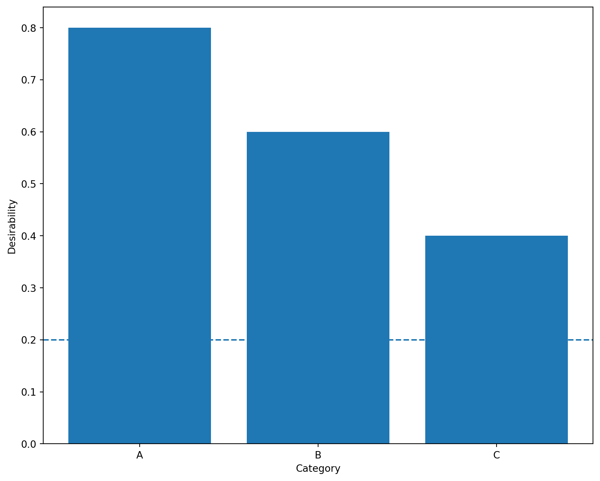
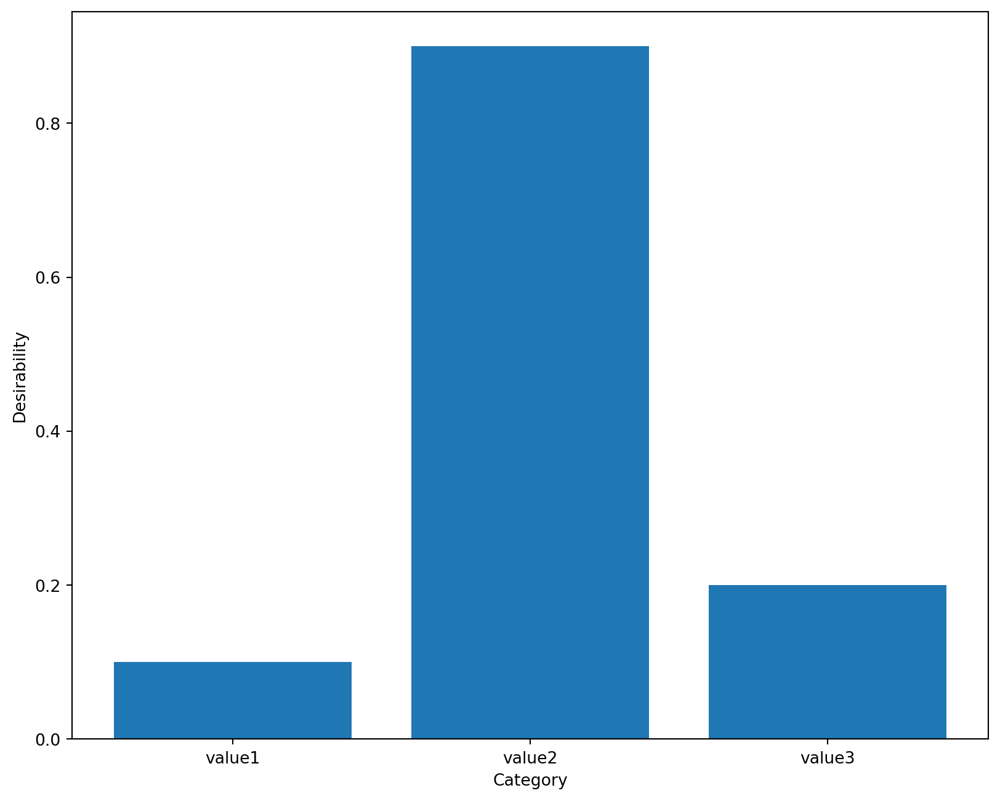
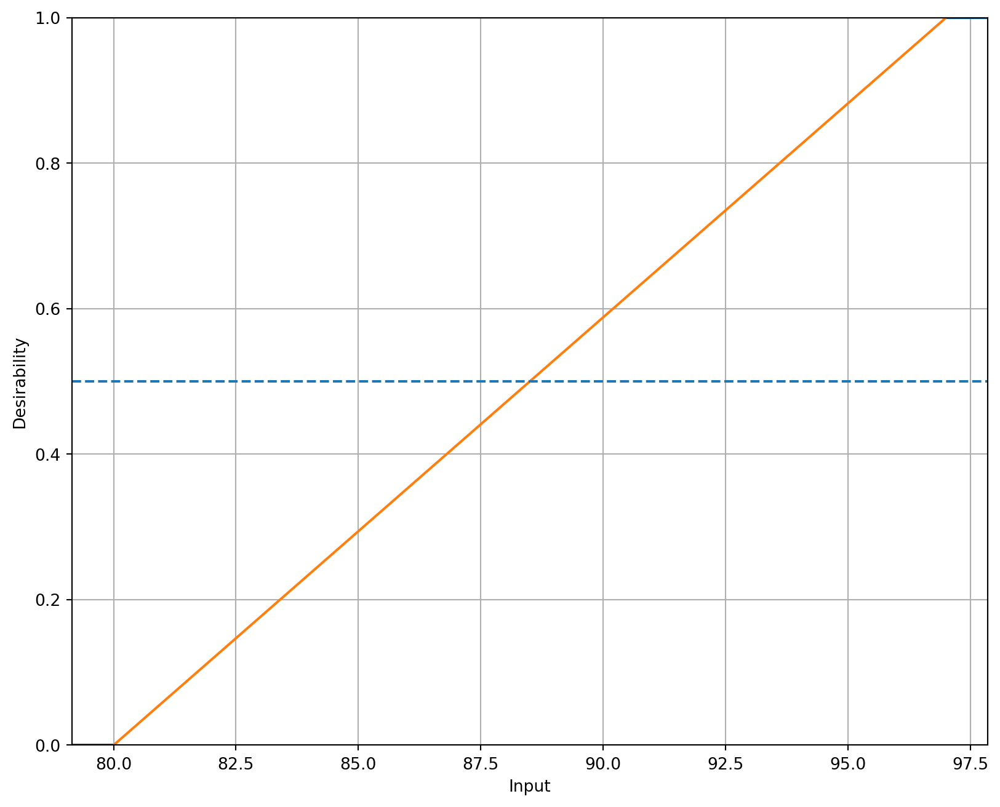
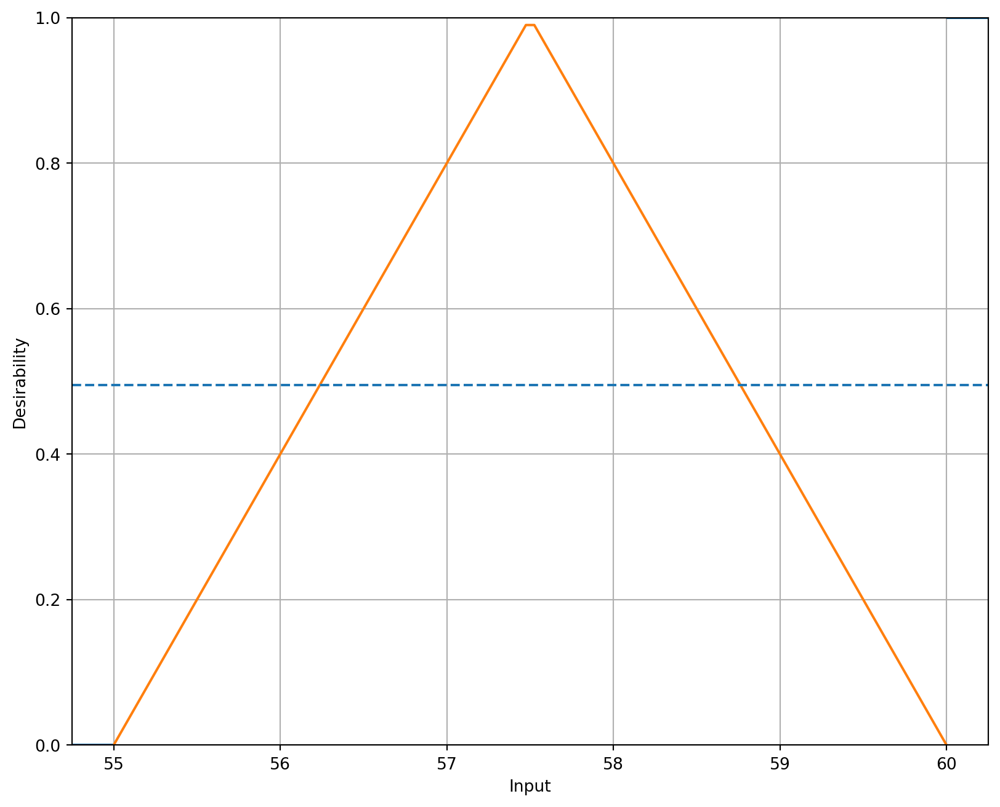
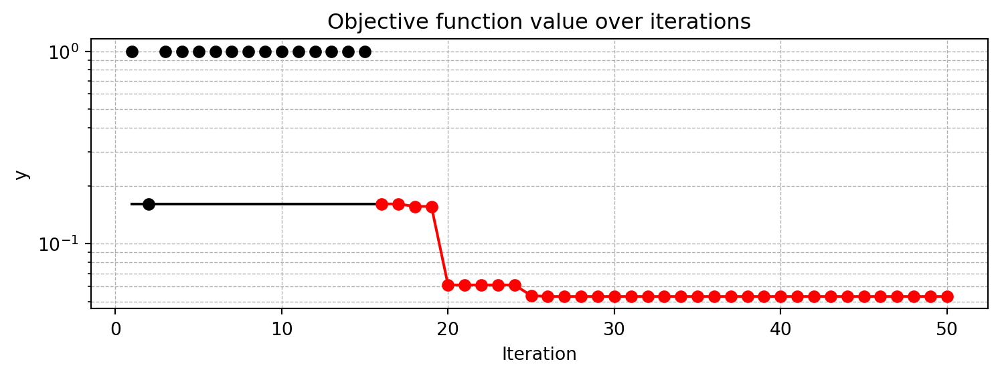
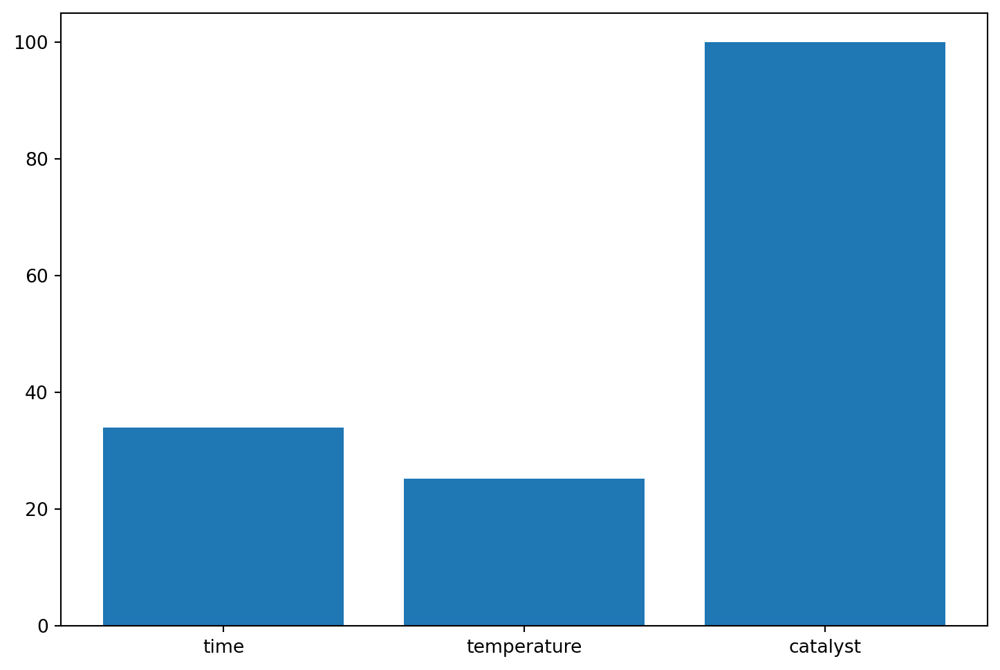
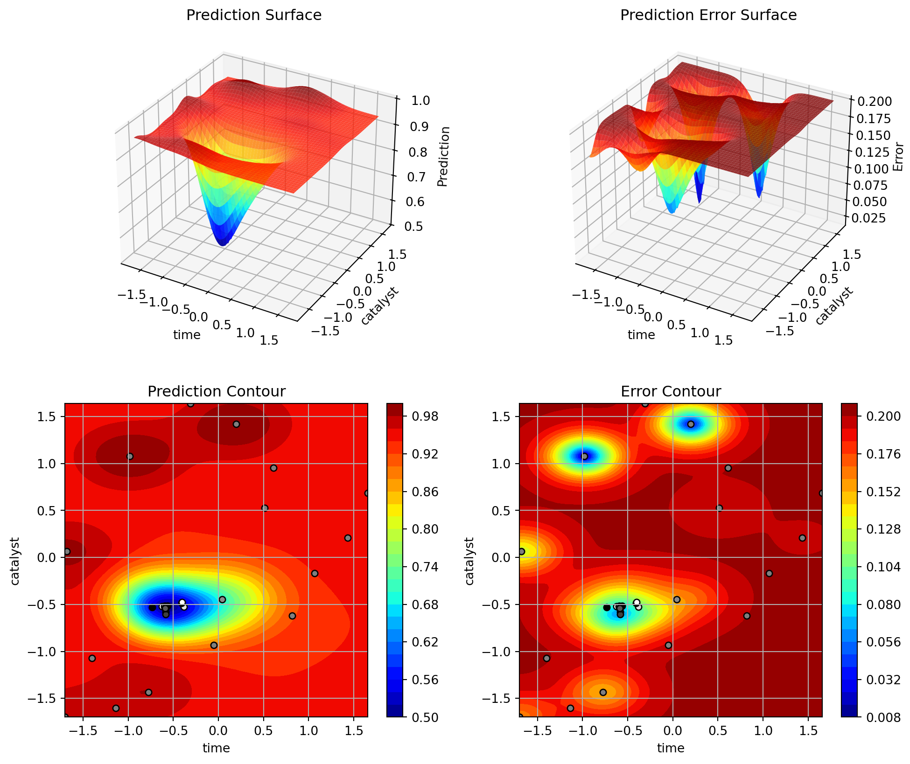
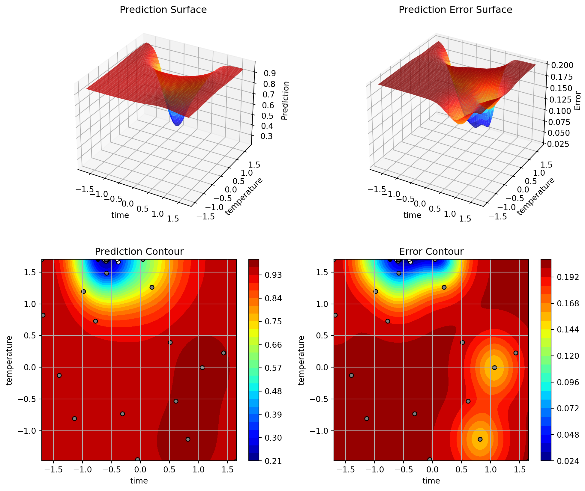
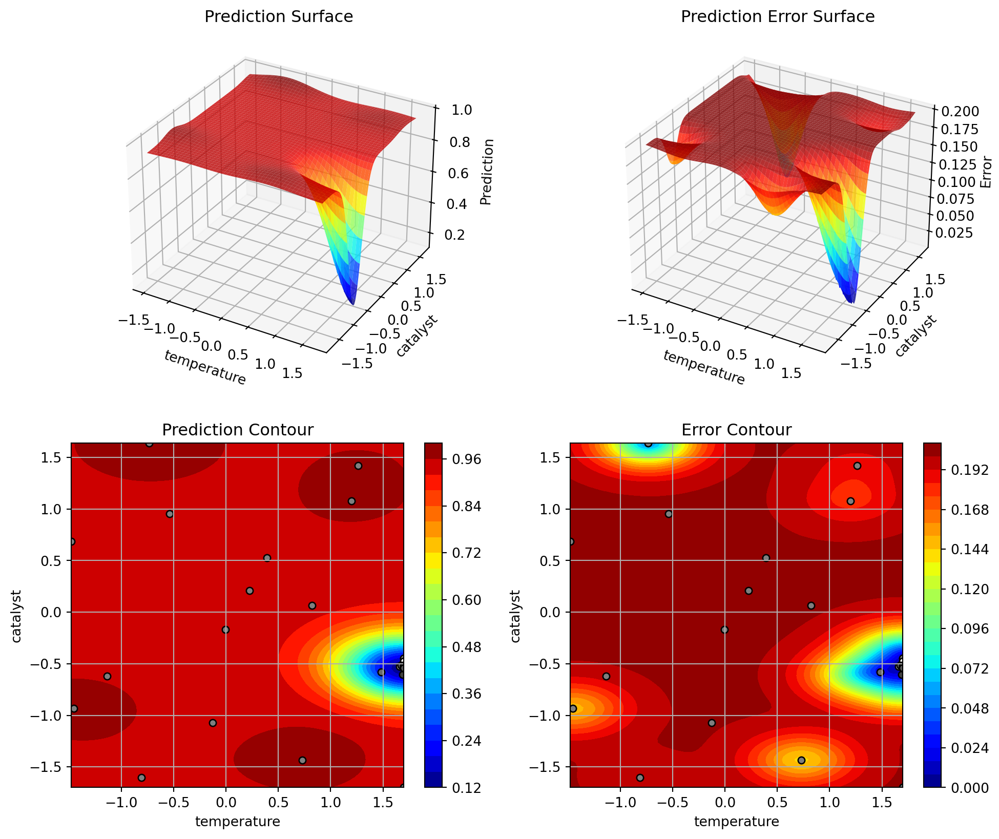
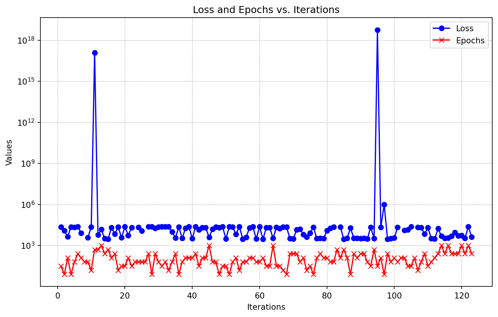

import os
from math import inf
import warnings
import numpy as np
import pandas as pd
import matplotlib.pyplot as plt
from scipy.optimize import minimize
from spotpython.hyperparameters.values import set_hyperparameter
from spotpython.data.diabetes import Diabetes
from spotpython.fun.mohyperlight import MoHyperLight
from spotpython.hyperdict.light_hyper_dict import LightHyperDict
from spotpython.hyperparameters.values import set_hyperparameter
from spotpython.mo.functions import fun_myer16a
from spotpython.mo.plot import plot_mo
from spotpython.plot.contour import (mo_generate_plot_grid, contour_plot,
contourf_plot)
from spotpython.utils.eda import print_exp_table, print_res_table
from spotpython.utils.file import get_experiment_filename
from spotpython.spot import Spot
from spotpython.utils.init import (fun_control_init, surrogate_control_init,
design_control_init)
from spotdesirability.utils.desirability import (DOverall, DMax, DCategorical, DMin,
DTarget, DArb, DBox)
from spotdesirability.plot.ccd import plotCCD
from spotdesirability.functions.rsm import rsm_opt, conversion_pred, activity_pred
warnings.filterwarnings("ignore")58 Introduction to Desirability Functions
The desirability function approach is a widely adopted method in industry for optimizing multiple response processes (“NIST/SEMATECH e-Handbook of Statistical Methods” 2021). It operates on the principle that the overall “quality” of a product or process with multiple quality characteristics is deemed unacceptable if any characteristic falls outside the “desired” limits. This approach identifies operating conditions that yield the most “desirable” response values, effectively balancing multiple objectives to achieve optimal outcomes.
Often, different scales are used for various objectives. When combining these objectives into a single new one, the challenge arises of how to compare the scales with each other. The fundamental idea of the desirability index is to transform the deviations of the objective value from its target value into comparable desirabilities, i.e., onto a common scale. For this, a target value as well as a lower and/or upper specification limit must be known for each objective involved. A result outside the specification limits is assigned a desirability of 0, while a result at the target value is assigned a desirability of 1. Linear or nonlinear transformation, such as a power transformation, can be chosen as the transformation between the specification limits. The desirability index according to Derringer and Suich (1980) is then the geometric mean of the desirabilities of the various objectives (Weihe et al. 1999).
The desirability package (Kuhn 2016), which is written in the statistical programming language R, contains S3 classes for multivariate optimization using the desirability function approach of Harington (1965) with functional forms described by Derringer and Suich (1980). It is available on CRAN, see https://cran.r-project.org/package=desirability.
Hyperparameter Tuning (or Hyperparameter Optimization) is crucial for configuring machine learning algorithms, as hyperparameters significantly impact performance (Bartz et al. 2022; Bischl et al. 2023) To avoid manual, time-consuming, and irreproducible trial-and-error processes, these tuning methods can be used. They include simple techniques like grid and random search, as well as advanced approaches such as evolution strategies, surrogate optimization, Hyperband, and racing. The tuning process has to consider several objectives, such as maximizing the model’s performance while minimizing the training time or model complexity. The desirability function approach is a suitable method for multi-objective optimization, as it allows for the simultaneous optimization of multiple objectives by combining them into a single desirability score.
This paper is structured as follows: After presenting the desirability function approach in Section 58.2, we introduce the Python package spotdesirability, which is a Python implementation of the R package desirability. The introduction is based on several “hands-on” examples. Section 58.3 provides an overview of related work in the field of multi-objective optimization and hyperparameter tuning. Section 58.4 presents an example of a chemical reaction with two objectives: conversion and activity. The example is based on a response surface experiment described by Myers, Montgomery, and Anderson-Cook (2016) and also used by Kuhn (2016). It allows a direct comparison of the results obtained with the R package desirability and the Python package spotdesirability. Section 58.5 describes how to maximize the desirability function using the Nelder-Mead algorithm from the scipy.optimize.minimize function. This approach is common in RSM (Box and Wilson 1951; Myers, Montgomery, and Anderson-Cook 2016). The optimization process is illustrated using the chemical reaction example from Section 58.4. This example is based on the example presented in Kuhn (2016), so that, similar to the comparison in Section 58.4, a comparison of the results obtained with the R and Python packages is possible. Section 58.6 presents an example of surrogate model-based optimization (Gramacy 2020; Forrester, Sóbester, and Keane 2008) using the spotdesirability package. Results from the RSM optimization can be compared with the results from surrogate model-based optimization. The surrogate model is based on the spotpython package (Bartz-Beielstein 2023). Section 58.7 presents an example of hyperparameter tuning of a neural network implemented in PyTorch using the spotdesirability package. The goal of this example is to demonstrate how to use the desirability function approach for hyperparameter tuning in a machine learning context. The article concludes with a summary and outlook in Section 58.8.
Citation
- If this document has been useful to you and you wish to cite it in a scientific publication, please refer to the following paper, which can be found on arXiv: https://arxiv.org/abs/2307.10262.
@article{bart25a,
adsurl = {https://ui.adsabs.harvard.edu/abs/2025arXiv250323595B},
archiveprefix = {arXiv},
author = {{Bartz-Beielstein}, Thomas},
doi = {10.48550/arXiv.2503.23595},
eid = {arXiv:2503.23595},
eprint = {2503.23595},
journal = {arXiv e-prints},
keywords = {Optimization and Control, Machine Learning, Applications, 90C26, I.2.6; G.1.6},
month = mar,
pages = {arXiv:2503.23595},
primaryclass = {math.OC},
title = {{Multi-Objective Optimization and Hyperparameter Tuning With Desirability Functions}},
year = 2025,
}58.1 The Python Packages Used in This Article
The following Python packages, classes, and functions are used in this article:
58.2 Desirability
58.2.1 Basic Desirability Functions
The desirability function approach to simultaneously optimizing multiple equations was originally proposed by Harington (1965). The approach translates the functions to a common scale (\([0, 1]\)), combines them using the geometric mean, and optimizes the overall metric. The equations can represent model predictions or other equations. Kuhn (2016) notes that desirability functions are popular in response surface methodology (RSM) (Box and Wilson 1951; Myers, Montgomery, and Anderson-Cook 2016) to simultaneously optimize a series of quadratic models. A response surface experiment may use measurements on a set of outcomes, where instead of optimizing each outcome separately, settings for the predictor variables are sought to satisfy all outcomes at once.
Kuhn (2016) explains that originally, Harrington used exponential functions to quantify desirability. In our Python implementation, which is based on the R package desirablity from Kuhn (2016), the simple discontinuous functions of Derringer and Suich (1980) are adopted. For simultaneous optimization of equations, individual “desirability” functions are constructed for each function, and Derringer and Suich (1980) proposed three forms of these functions corresponding to the optimization goal type. Kuhn (2016) describes the R implementation as follows:
Suppose there are \(R\) equations or functions to simultaneously optimize, denoted \(f_r(\vec{x})\) (\(r = 1 \ldots R\)). For each of the \(R\) functions, an individual “desirability” function is constructed that is high when \(f_r(\vec{x})\) is at the desirable level (such as a maximum, minimum, or target) and low when \(f_r(\vec{x})\) is at an undesirable value. Derringer and Suich (1980) proposed three forms of these functions, corresponding to the type of optimization goal, namely maximization, minimization, or target optimization. The associated desirability functions are denoted \(d_r^{\text{max}}\), \(d_r^{\text{min}}\), and \(d_r^{\text{target}}\).
58.2.1.1 Maximization
For maximization of \(f_r(\vec{x})\) (“larger-is-better”), the following function is used:
\[ d_r^{\text{max}} = \begin{cases} 0 & \text{if } f_r(\vec{x}) < A \\ \left(\frac{f_r(\vec{x}) - A}{B - A}\right)^s & \text{if } A \leq f_r(\vec{x}) \leq B \\ 1 & \text{if } f_r(\vec{x}) > B, \end{cases} \]
where \(A\), \(B\), and \(s\) are chosen by the investigator.
58.2.1.2 Minimization
For minimization (“smaller-is-better”), the following function is proposed:
\[ d_r^{\text{min}} = \begin{cases} 0 & \text{if } f_r(\vec{x}) > B \\ \left(\frac{f_r(\vec{x}) - B}{A - B}\right)^s & \text{if } A \leq f_r(\vec{x}) \leq B \\ 1 & \text{if } f_r(\vec{x}) < A \end{cases} \]
58.2.1.3 Target Optimization
In “target-is-best” situations, the following function is used:
\[ d_r^{\text{target}} = \begin{cases} \left(\frac{f_r(\vec{x}) - A}{t_0 - A}\right)^{s_1} & \text{if } A \leq f_r(\vec{x}) \leq t_0 \\ \left(\frac{f_r(\vec{x}) - B}{t_0 - B}\right)^{s_2} & \text{if } t_0 \leq f_r(\vec{x}) \leq B \\ 0 & \text{otherwise.} \end{cases} \]
Kuhn (2016) explains that these functions, which are shown in Figure 58.1, share the same scale and are discontinuous at specific points \(A\), \(B\), and \(t_0\). The values of \(s\), \(s_1\), or \(s_2\) can be chosen so that the desirability criterion is easier or more difficult to satisfy. For example:
- If \(s\) is chosen to be less than 1 in \(d_r^{\text{min}}\), \(d_r^{\text{min}}\) is near 1 even if the model \(f_r(\vec{x})\) is not low.
- As values of \(s\) move closer to 0, the desirability reflected by \(d_r^{\text{min}}\) becomes higher.
- Values of \(s\) greater than 1 will make \(d_r^{\text{min}}\) harder to satisfy in terms of desirability.
Kuhn notes that these scaling factors are useful when one equation holds more importance than others. He emphasizes that any function can reflect model desirability; Del Castillo, Montgomery, and McCarville (1996) developed alternative functions suitable for gradient-based optimizations.
dCategorical_obj = DCategorical(missing=0.2, values={"A": 0.8, "B": 0.6, "C": 0.4})
dCategorical_obj.plot()

For each of these three desirability functions (and the others discussed in Section 58.2.3), there are print_class_attributes, plot, and predict methods similar to the R implementation (Kuhn 2016). The print_attributes method prints the class attributes, the plot method plots the desirability function, and the predict method predicts the desirability for a given input.
58.2.2 Overall Desirability
Given the \(R\) desirability functions \(d_1 \ldots d_r\) are on the [0,1] scale, they can be combined to achieve an overall desirability function, \(D\). One method of doing this is by the geometric mean:
\[ D = \left(\prod_{r=1}^R d_r\right)^{1/R}. \]
The geometric mean has the property that if any one model is undesirable (\(d_r = 0\)), the overall desirability is also unacceptable (\(D = 0\)). Once \(D\) has been defined and the prediction equations for each of the \(R\) equations have been computed, it can be used to optimize or rank the predictors.
58.2.3 Non-Standard Features
The R package desirability (Kuhn 2016) offers a few non-standard features. These non-standard features are also included in the Python implementation and will be discussed in the following. First, we will consider the non-informative desirability and missing values, followed by zero-desirability tolerances, and finally non-standard desirability functions.
58.2.3.1 Non-Informative Desirability and Missing Values
According to Kuhn, if inputs to desirability functions are uncomputable, the package estimates a non-informative value by computing desirabilities over the possible range and taking the mean.
If an input to a desirability function is NA, by default, it is replaced by this non-informative value. Setting object$missing to NA (in R) changes the calculation to return an NA for the result, where object is the result of a call to one of the desirability functions.A similar procedure is implemented in the Python package. The non-informative value is plotted as a broken line in default plot methods.
58.2.3.2 Zero-Desirability Tolerances
Kuhn (2016) highlights that in high-dimensional outcomes, finding feasible solutions where every desirability value is acceptable can be challenging. Each desirability R function has a tol argument, which can be set between [0, 1] (default is NULL). If not null, zero desirability values are replaced by tol.
58.2.3.3 Non-Standard Desirability Functions
Kuhn mentions scenarios where the three discussed desirability functions are inadequate for user requirements.
58.2.3.3.1 Custom or Arbitary Desirability Functions
In this case, the dArb function (Arb stands for “Arbitary”) can be used to create a custom desirability function. dArb accepts numeric vector inputs with matching desirabilities to approximate other functional forms. For instance, a logistic function can be used as a desirability function. The logistic function is defined as \(d(\vec{x}) = \frac{1}{1+\exp(-\vec{x})}\). For inputs outside the range \(\pm5\), desirability values remain near zero and one. The desirability function is defined using 20 computation points on this range, and these values establish the desirability function.
# Define the logistic function
def foo(u):
return 1 / (1 + np.exp(-u))
# Generate input values
x_input = np.linspace(-5, 5, 20)
# Create the DArb object
logistic_d = DArb(x_input, foo(x_input))
logistic_d.print_class_attributes()
Class: DArb
x: [-5. -4.47368421 -3.94736842 -3.42105263 -2.89473684 -2.36842105
-1.84210526 -1.31578947 -0.78947368 -0.26315789 0.26315789 0.78947368
1.31578947 1.84210526 2.36842105 2.89473684 3.42105263 3.94736842
4.47368421 5. ]
d: [0.00669285 0.01127661 0.0189398 0.03164396 0.05241435 0.08561266
0.1368025 0.21151967 0.31228169 0.43458759 0.56541241 0.68771831
0.78848033 0.8631975 0.91438734 0.94758565 0.96835604 0.9810602
0.98872339 0.99330715]
tol: None
missing: 0.5Inputs in-between these grid points are linearly interpolated. Using this method, extreme values are applied outside the input range. Figure 58.2 displays a plot of the logisticD object.
logistic_d.plot()DArb function. The desirability function is a logistic curve that is defined by 20 points on the range [-5, 5].
58.2.3.3.2 Desirabilty Function for Box Constraints
Kuhn also adds that there is a desirability function for implementing box constraints on an equation. For example, assigning zero desirability to values beyond \(\pm 1.682\) in the design region, instead of penalizing. Figure 58.3 demonstrates an example function.
box_desirability = DBox(low=-1.682, high=1.682)
box_desirability.plot(non_inform=False)58.2.3.3.3 Desirability Function for Categorical Inputs
Kuhn concludes by mentioning another non-standard application involving categorical inputs. Desirabilities are assigned to each value. For example:
# Define desirability values for categorical inputs
values = {"value1": 0.1, "value2": 0.9, "value3": 0.2}
# Create a DCategorical object
grouped_desirabilities = DCategorical(values)
# Print the desirability values
print("Desirability values for categories:")
for category, desirability in grouped_desirabilities.values.items():
print(f"{category}: {desirability}")
# Example usage: Predict desirability for a specific category
category = "value2"
predicted_desirability = grouped_desirabilities.predict([category])
print(f"\nPredicted desirability for '{category}': {predicted_desirability[0]}")Desirability values for categories:
value1: 0.1
value2: 0.9
value3: 0.2
Predicted desirability for 'value2': 0.9Figure 58.4 visualizes a plot of desirability profiles for this setup.
grouped_desirabilities.plot(non_inform=False)

58.4 An Example With Two Objectives: Chemical Reaction
Similar to the presentation in Kuhn (2016), we will use the example of a chemical reaction to illustrate the desirability function approach. The example is based on a response surface experiment described by Myers, Montgomery, and Anderson-Cook (2016). The goal is to maximize the percent conversion of a chemical reaction while keeping the thermal activity within a specified range.
The central composite design (CCD) is the most popular class of designs used for fitting second-order response surface models (Montgomery 2001). Since the location of the optimum is unknown before the RSM starts, Box and Hunter (1957) suggested that the design should be rotatable (it provides equal precision of estimation in all directions or stated differently, the variance of the predicted response is the same at all points that are the same distance from the center of the design space). A CCD is made rotable by using an axis distance value of \(\alpha = (n_F)^{1/4}\), where \(n_F\) is the number of points (here \(2^3 = 8\)) (Montgomery 2001). Figure 58.5 shows the design space for the chemical reaction example. The design space is defined by three variables: reaction time, reaction temperature, and percent catalyst. This rotable CCD consists of a full factorial design with three factors, each at two levels, plus a center point and six (\(2\times k\)) axial points. The axial points are located at a distance of \(\pm \alpha\) from the center point in each direction.
plotCCD(figsize=(8, 6), title=None)Montgomery (2001) note that it is not important to have exact rotability. From a prediction variance point of view, the best choice is to set \(\alpha = \sqrt{k}\), which results in a so-called spherical CCD.
58.4.1 The Two Objective Functions: Conversion and Activity
Myers, Montgomery, and Anderson-Cook (2016) present two equations for the fitted quadratic response surface models.
\[\begin{align*} f_{\text{con}}(x) = & 81.09 + 1.0284 \cdot x_1 + 4.043 \cdot x_2 + 6.2037 \cdot x_3 + 1.8366 \cdot x_1^2 + 2.9382 \cdot x_2^2 \\ & + 5.1915 \cdot x_3^2 + 2.2150 \cdot x_1 \cdot x_2 + 11.375 \cdot x_1 \cdot x_3 + 3.875 \cdot x_2 \cdot x_3 \end{align*}\] and \[\begin{align*} f_{\text{act}}(x) = & 59.85 + 3.583 \cdot x_1 + 0.2546 \cdot x_2 + 2.2298 \cdot x_3 + 0.83479 \cdot x_1^2 + 0.07484 \cdot x_2^2 \\ & + 0.05716 \cdot x_3^2 + 0.3875 \cdot x_1 \cdot x_2 + 0.375 \cdot x_1 \cdot x_3 + 0.3125 \cdot x_2 \cdot x_3. \end{align*}\]
They are implemented as Python functions that take a vector of three parameters (reaction time, reaction temperature, and percent catalyst) and return the predicted values for the percent conversion and thermal activity and available in the spotdesirability package.
The goal of the analysis in Myers, Montgomery, and Anderson-Cook (2016) was to
- maximize conversion while
- keeping the thermal activity between 55 and 60 units. An activity target of 57.5 was used in the analysis.
Plots of the response surface models are shown in Figure 58.6 and Figure 58.7, where reaction time and percent catalyst are plotted while the reaction temperature was varied at four different levels. Both quadratic models, as pointed out by Kuhn, are saddle surfaces, and the stationary points are outside of the experimental region. To determine predictor settings for these models, a constrained optimization can be used to stay inside the experimental region. Kuhn notes:
In practice, we would just use the
predictmethod for the linear model objects to get the prediction equation. Our results are slightly different from those given by Myers and Montgomery because they used prediction equations with full floating-point precision.
58.4.2 Contour Plot Generation
58.4.2.1 Contour Plots for the Response Surface Models
We will generate contour plots for the percent conversion and thermal activity models. The contour-plot generation comprehends the following steps:
- generating a grid of points in the design space and evaluating the response surface models at these points, and
- plotting the contour plots for the response surface models
We will use the function mo_generate_plot_grid to generate the grid and the function mo_contourf_plots for creating the contour plots for the response surface models. Both functions are available in the spotpython package.
First we define the variables, their ranges, the resolutions for the grid, and the objective functions. The variables dictionary contains the variable names as keys and their ranges as values. The resolutions dictionary contains the variable names as keys and their resolutions as values. The functions dictionary contains the function names as keys and the corresponding functions as values. Next we can generate the Pandas DataFrame plot_grid. It has the columns time, temperature, catalyst, conversionPred, and activityPred.
variables = {
"time": (-1.7, 1.7),
"temperature": (-1.7, 1.7),
"catalyst": (-1.7, 1.7)
}
resolutions = {
"time": 50,
"temperature": 4,
"catalyst": 50
}
functions = {
"conversionPred": conversion_pred,
"activityPred": activity_pred
}
plot_grid = mo_generate_plot_grid(variables, resolutions, functions)Figure 58.6 shows the response surface for the percent conversion model. To plot the model contours, the temperature variable was fixed at four diverse levels. The largest effects in the fitted model are due to the time \(\times\) catalyst interaction and the linear and quadratic effects of catalyst. Figure 58.7 shows the response surface for the thermal activity model. To plot the model contours, the temperature variable was fixed at four diverse levels. The main effects of time and catalyst have the largest effect on the fitted model.
contourf_plot(
plot_grid,
x_col="time",
y_col="catalyst",
z_col="conversionPred",
facet_col="temperature",
)contourf_plot(
plot_grid,
x_col="time",
y_col="catalyst",
z_col="activityPred",
facet_col="temperature",
)58.4.2.2 Defining the Desirability Functions
Following the steps described in Kuhn (2016), translating the experimental goals to desirability functions, a larger-is-better function (\(d_r^{\text{max}}\)) is used for percent conversion with values \(A = 80\) and \(B = 97\). A target-oriented desirability function (\(d_r^{\text{target}}\)) was used for thermal activity with \(t_0 = 57.5\), \(A = 55\), and \(B = 60\).
Kuhn emphasizes that to construct the overall desirability functions, objects must be created for the individual functions. In the following, we will use classes of the Python package spotdesirability to create the desirability objects. The spotdesirability package is part of the sequential parameter optimization framework (Bartz-Beielstein 2023). It is available on GitHub [https://github.com/sequential-parameter-optimization/spotdesirability] and on PyPi https://pypi.org/project/spotdesirability and can be installed via pip install spotdesirability.
The desirability objects can be created as follows:
conversionD = DMax(80, 97)
activityD = DTarget(55, 57.5, 60)Although the original analysis in Myers, Montgomery, and Anderson-Cook (2016) used numerous combinations of scaling parameters, following the presentation in Kuhn (2016), we will only show analyses with the default scaling factor values.
Example 58.1 (Computing Desirability at the Center Point) Using these desirability objects conversionDand activityD, the following code segment shows how to predict the desirability for the center point of the experimental design. The center point is defined as [0, 0, 0].
pred_outcomes = [
conversion_pred([0, 0, 0]),
activity_pred([0, 0, 0])
]
print("Predicted Outcomes:", pred_outcomes)Predicted Outcomes: [81.09, 59.85]# Predict desirability for each outcome
conversion_desirability = conversionD.predict(pred_outcomes[0])
activity_desirability = activityD.predict(pred_outcomes[1])
print("Conversion Desirability:", conversion_desirability)
print("Activity Desirability:", activity_desirability)Conversion Desirability: [0.06411765]
Activity Desirability: [0.06]Similar to the implementation in Kuhn (2016), to get the overall score for these settings of the experimental factors, the dOverall function is used to combine the objects and predict is used to get the final score. The print_class_attributes method prints the class attributes of the DOverall object.
overallD = DOverall(conversionD, activityD)
overallD.print_class_attributes()
Class: DOverall
d_objs: [
Class: DMax
low: 80
high: 97
scale: 1
tol: None
missing: 0.5
Class: DTarget
low: 55
target: 57.5
high: 60
low_scale: 1
high_scale: 1
tol: None
missing: 0.4949494949494951
]Note: The attribute missing is explained in Section 58.2.3.1.
Finally, we can print the overall desirability for the center point of the experimental design.
#] echo: true
overall_desirability = overallD.predict(pred_outcomes, all=True)
print("Conversion Desirability:", overall_desirability[0][0])
print("Activity Desirability:", overall_desirability[0][1])
print("Overall Desirability:", overall_desirability[1])Conversion Desirability: [0.06411765]
Activity Desirability: [0.06]
Overall Desirability: [0.06202466]58.4.2.3 Generating the Desirability DataFrame
A DataFrame d_values_df is created to store the individual desirability values for each outcome, and the overall desirability value is added as a new column. First, we predict desirability values and extract the individual and overall desirability values.
Note: The all=True argument indicates that both individual and overall desirability values should be returned.
We add the individual and overall desirability values to the plot_grid DataFrame, that was created earlier in Section 58.4.2.
d_values = overallD.predict(plot_grid.iloc[:, [3, 4]].values, all=True)
individual_desirabilities = d_values[0]
overall_desirability = d_values[1]
d_values_df = pd.DataFrame(individual_desirabilities).T
d_values_df.columns = ["D1", "D2"]
d_values_df["Overall"] = overall_desirability
plot_grid = pd.concat([plot_grid, d_values_df], axis=1)58.4.2.4 Contour Plots for the Desirability Surfaces
We will use spotpython’s contourf_plot function to create the contour plots for the individual desirability surfaces and the overall desirability surface. The plot_grid DataFrame contains the predicted values for the conversion and activity models, which are used to create the contour plots.
Figure 58.8, Figure 58.9, and Figure 58.10 show contour plots of the individual desirability function surfaces and the overall surface. These plots are in correspondence with the figures in Kuhn (2016), but the color schemes are different. The plot_grid DataFrame contains the predicted values for the conversion and activity models, which are used to create the contour plots.
The individual desirability surface for the percent conversion outcome is shown in Figure 58.8 and the individual desirability surface for the thermal activity outcome is shown in Figure 58.9. Finally, the overall desirability surface is shown in Figure 58.10.
contourf_plot(
data=plot_grid,
x_col='time',
y_col='catalyst',
z_col='D1',
facet_col='temperature',
aspect=1,
as_table=True,
figsize=(3,3)
)dMax(80, 97)
contourf_plot(
data=plot_grid,
x_col='time',
y_col='catalyst',
z_col='D2',
facet_col='temperature',
aspect=1,
as_table=True,
figsize=(3,3)
)dTarget(55, 57.5, 60)
contourf_plot(
data=plot_grid,
x_col='time',
y_col='catalyst',
z_col='Overall',
facet_col='temperature',
aspect=1,
as_table=True,
figsize=(3,3)
)58.5 Multi-Objective Optimization and Maximizing Desirability
Kuhn indicates that as described by Myers, Montgomery, and Anderson-Cook (2016), desirability can be maximized within a cuboidal region defined by the axial point values. The objective function (rsmOpt) utilizes a penalty approach: if a candidate point extends beyond the cuboidal design region, desirability is set to zero. These penalties are implemented in the rsm_opt function, which is used to optimize the desirability function. An \(\alpha\) value of 1.682 (\(\approx (2^k)^(1/4)\) with \(k=3\) in our case), see Montgomery (2001), is used as the limit for both circular and square spaces. After checking the bounds, predictions for all provided functions are calculated, and the overall desirability is predicted using the predict method of the DOverall object. The negative desirability is returned to maximize the desirability function.
def rsm_opt(x, d_object, prediction_funcs, space="square", alpha=1.682) -> float:
if space == "circular":
if np.sqrt(np.sum(np.array(x) ** 2)) > alpha:
return 0.0
elif space == "square":
if np.any(np.abs(np.array(x)) > alpha):
return 0.0
else:
raise ValueError("space must be 'square' or 'circular'")
predictions = [func(x) for func in prediction_funcs]
desirability = d_object.predict(np.array([predictions]))
return -desirabilityNote: Instead of using the penatlty approach, alternatively the desirability function for box-constraints can be used, see Section 58.2.3.3.2. Furthermore, scipy.optimize provides a bounds argument for some optimizers to restrict the search space.
Kuhn (2016) used R’s optim function to implement the Nelder-Mead simplex method (Nelder and Mead 1965; Olsson and Nelson 1975). This direct search method relies on function evaluations without using gradient information. Although this method may converge to a local optimum, it is fast with efficient functions, allowing for multiple feasible region restarts to find the best result. Alternatively, methods like simulated annealing (Bohachevsky 1986), also available in R’s optim function, might better suit global optimum searches, though they might need parameter tuning for effective performance. We will use the scipy.optimize.minimize function to implement the Nelder-Mead simplex method in Python.
Putting the pieces together, the following code segment shows how to create the desirability objects and use them in the optimization process. First, a search_grid is created using numpy’s meshgrid function to generate a grid of restarts points in the design space. For each (restart) point in the search grid, the rsm_opt function is called to calculate the desirability for that point. The conversion_pred and activity_pred functions are used as prediction functions, and the DOverall object is created using the individual desirability objects for conversion and activity. The overallD (overall desirability) is passed to tne rsm_opt function. The minimize function from scipy.optimize is used to find the optimal parameters that minimize the negative desirability.
time = np.linspace(-1.5, 1.5, 5)
temperature = np.linspace(-1.5, 1.5, 5)
catalyst = np.linspace(-1.5, 1.5, 5)
search_grid = pd.DataFrame(
np.array(np.meshgrid(time, temperature, catalyst)).T.reshape(-1, 3),
columns=["time", "temperature", "catalyst"]
)
# List of prediction functions
prediction_funcs = [conversion_pred, activity_pred]
# Individual desirability objects
conversionD = DMax(80, 97)
activityD = DTarget(55, 57.5, 60)
# Desirability object (DOverall)
overallD = DOverall(conversionD, activityD)
# Initialize the best result
best = None
# Perform optimization for each point in the search grid
for i, row in search_grid.iterrows():
initial_guess = row.values # Initial guess for optimization
# Perform optimization using scipy's minimize function
result = minimize(
rsm_opt,
initial_guess,
args=(overallD, prediction_funcs, "square"),
method="Nelder-Mead",
options={"maxiter": 1000, "disp": False}
)
# Update the best result if necessary
# Compare based on the negative desirability
if best is None or result.fun < best.fun:
best = result
print("Best Parameters:", best.x)
print("Best Desirability:", -best.fun)Best Parameters: [-0.51207663 1.68199987 -0.58609664]
Best Desirability: 0.9425092694688632Using these best parameters, the predicted values for conversion and activity can be calculated as follows:
print(f"Conversion pred(x): {conversion_pred(best.x)}")
print(f"Activity pred(x): {activity_pred(best.x)}")Conversion pred(x): 95.10150374903237
Activity pred(x): 57.49999992427212We extract the best temperature from the best parameters and remove it from the best parameters for plotting. The best.x array contains the best parameters found by the optimizer, where the second element corresponds to the temperature variable.
best_temperature = best.x[1]
best_point = np.delete(best.x, 1)Then we set the values of temperature to the best temperature in the plot_grid_df and recalculate the predicted values for conversion and activity using the conversion_pred and activity_pred functions. A copy of the plot_grid DataFrame is created, and the temperature column is updated with the best temperature value.
plot_grid_best = plot_grid.copy()
plot_grid_best["temperature"] = best_temperature
plot_grid_best["conversionPred"] = conversion_pred(plot_grid_best[["time",
"temperature", "catalyst"]].values.T)
plot_grid_best["activityPred"] = activity_pred(plot_grid_best[["time",
"temperature", "catalyst"]].values.T)Now we are ready to plot the response surfaces for the best parameters found by the optimizer. The contourf_plot function is used to create the contour plots for the response surface models. The highlight_point argument is used to highlight the best point found by the optimizer in the contour plots. First, the response surface for the percent conversion model is plotted. The temperature variable is fixed at the best value found by the optimizer, see Figure 58.11.
contourf_plot(
plot_grid_best,
x_col="time",
y_col="catalyst",
z_col="conversionPred",
facet_col="temperature",
highlight_point=best_point,
)Second, the response surface for the thermal activity model is plotted. The temperature variable is fixed at the best value found by the optimizer, see Figure 58.12.
contourf_plot(
plot_grid_best,
x_col="time",
y_col="catalyst",
z_col="activityPred",
facet_col="temperature",
highlight_point=best_point,
)
Analysing the Best Values From the Nelder-Mead Optimizer
- Objective function values for the best parameters found by the optimizer are:
conversion= 95.1activity= 57.5
- The best value for the percent conversion should be maximized, as defined in
conversionD = DMax(80, 97). Here, we have obtained a value of 95.1, which is close to the maximum value of 97. - Since we are using the desirabilty function
DTarget, the values for thethermal activityshould not be maximized, but should be close to the target. The settingactivityD = DTarget(55, 57.5, 60), as defined in Section 58.4.2.2, states that the best value for thethermal activityshould be close to 57.5 as specified by the user (and not at its maximum). Here, we have obtained a value of 57.5, which is exactly the target value.
An alternative approach to the optimization process is to use a circular design region instead of a cuboidal design region can be found in the Appendix.
58.6 Surrogate-Model Based Optimization Using Desirability
spotpython implements a vectorized function fun_myer16a() that computes the two objective functions for conversion and activity. To illustrate the vectorized evaluation, we will use two input points: the center point of the design space and the best point found by the optimizer from Section 58.5. The fun_myer16a() function takes a 2D array as input, where each row corresponds to a different set of parameters. The function returns a 2D array with the predicted values for conversion and activity.
X = np.array([[0, 0, 0], best.x])
y = fun_myer16a(X)
print("Objective function values:")
print(y)Objective function values:
[[81.09 59.85 ]
[95.10150375 57.49999992]]Next, we define the desirability objects. This step is identical to the previous one, where we defined the desirability functions for conversion and activity. The DMax function is used for the conversion function, and the DTarget function is used for the activity function. The DOverall function is used to combine the two desirability functions into an overall desirability function. The DOverall function takes two arguments: the desirability object for conversion and the desirability object for activity.
from spotdesirability.utils.desirability import DOverall, DMax, DTarget
conversionD = DMax(80, 97)
activityD = DTarget(55, 57.5, 60)
overallD = DOverall(conversionD, activityD)conversionD.plot()

activityD.plot()

Predicting the desirability for each outcome can also be vectorized. The predict method of the desirability objects can take a 2D array as input, where each row corresponds to a different set of parameters. The method returns a 1D array with the predicted desirability values for each set of parameters.
conversion_desirability = conversionD.predict(y[:,0])
activity_desirability = activityD.predict(y[:,1])print(f"Conversion Desirability: {conversion_desirability}")
print(f"Activity Desirability: {activity_desirability}")Conversion Desirability: [0.06411765 0.88832375]
Activity Desirability: [0.06 0.99999997]The overall_desirability variable contains the overall desirability values for each set of parameters. The all=True argument indicates that we want to return both the individual desirability values and the overall desirability value.
overall_desirability = overallD.predict(y, all=True)print(f"OverallD: {overall_desirability}")OverallD: ([array([0.06411765, 0.88832375]), array([0.06 , 0.99999997])], array([0.06202466, 0.94250927]))During the surrogate-model based optimization, the argument all is set to False, because spotpython does not need the individual desirability values.
Now we have introduced all elements needed to perform surrogate-model based optimization using desirability functions and the spotpython package.
Maximization and Minimization
- Since
spotpythonuses minimization, but desirability should be maximized,fun_desirabilityis defined to return1 - overall_desirability.
def fun_desirability(X, **kwargs):
y = fun_myer16a(X)
conversionD = DMax(80, 97)
activityD = DTarget(55, 57.5, 60)
overallD = DOverall(conversionD, activityD)
overall_desirability = overallD.predict(y, all=False)
return 1.0 - overall_desirabilityWe can test the function:
X = np.array([[0, 0, 0], best.x])
y = fun_desirability(X)
print("Objective function values:")
print(y)Objective function values:
[0.93797534 0.05749073]As expected, the output contains the two overall “1 minus desirability” function values for the center point of the design space and the best point found by the optimizer.
We are now ready to perform the surrogate-model based optimization using desirability functions. The spotpython package provides a class Spot that implements the surrogate-model based optimization algorithm. The Spot class takes the objective function and the control parameters as input. The control parameters define the search space and other settings for the optimization process.
fun_control = fun_control_init(
lower = np.array( [-1.7, -1.7, -1.7]),
upper = np.array([1.7, 1.7, 1.7]),
var_name = ["time", "temperature", "catalyst"],
fun_evals= 50
)
design_control=design_control_init(init_size=15)
S = Spot(fun=fun_desirability,
fun_control=fun_control,
design_control=design_control)
S.run()Anisotropic model: n_theta set to 3
Anisotropic model: n_theta set to 3
spotpython tuning: 0.16080910335362375 [###-------] 32.00%
Anisotropic model: n_theta set to 3
spotpython tuning: 0.16080910335362375 [###-------] 34.00%
Anisotropic model: n_theta set to 3
spotpython tuning: 0.15610822344277375 [####------] 36.00%
Anisotropic model: n_theta set to 3
spotpython tuning: 0.15610822344277375 [####------] 38.00%
Anisotropic model: n_theta set to 3
spotpython tuning: 0.06081194475417884 [####------] 40.00%
Anisotropic model: n_theta set to 3
spotpython tuning: 0.06081194475417884 [####------] 42.00%
Anisotropic model: n_theta set to 3
spotpython tuning: 0.06081194475417884 [####------] 44.00%
Anisotropic model: n_theta set to 3
spotpython tuning: 0.06081194475417884 [#####-----] 46.00%
Anisotropic model: n_theta set to 3
spotpython tuning: 0.06081194475417884 [#####-----] 48.00%
Anisotropic model: n_theta set to 3
spotpython tuning: 0.0584683097148464 [#####-----] 50.00%
Anisotropic model: n_theta set to 3
spotpython tuning: 0.0584683097148464 [#####-----] 52.00%
Anisotropic model: n_theta set to 3
spotpython tuning: 0.05216868777240391 [#####-----] 54.00%
Anisotropic model: n_theta set to 3
spotpython tuning: 0.05171885509748464 [######----] 56.00%
Anisotropic model: n_theta set to 3
spotpython tuning: 0.05171412412970089 [######----] 58.00%
Anisotropic model: n_theta set to 3
spotpython tuning: 0.05168553500301565 [######----] 60.00%
Anisotropic model: n_theta set to 3
spotpython tuning: 0.05168553500301565 [######----] 62.00%
Anisotropic model: n_theta set to 3
spotpython tuning: 0.05168553500301565 [######----] 64.00%
Anisotropic model: n_theta set to 3
spotpython tuning: 0.05168553500301565 [#######---] 66.00%
Anisotropic model: n_theta set to 3
spotpython tuning: 0.05168553500301565 [#######---] 68.00%
Anisotropic model: n_theta set to 3
spotpython tuning: 0.05168553500301565 [#######---] 70.00%
Anisotropic model: n_theta set to 3
spotpython tuning: 0.05168553500301565 [#######---] 72.00%
Anisotropic model: n_theta set to 3
spotpython tuning: 0.05168553500301565 [#######---] 74.00%
Anisotropic model: n_theta set to 3
spotpython tuning: 0.05168553500301565 [########--] 76.00%
Anisotropic model: n_theta set to 3
spotpython tuning: 0.05168553500301565 [########--] 78.00%
Anisotropic model: n_theta set to 3
spotpython tuning: 0.05168553500301565 [########--] 80.00%
Anisotropic model: n_theta set to 3
spotpython tuning: 0.05168553500301565 [########--] 82.00%
Anisotropic model: n_theta set to 3
spotpython tuning: 0.05168553500301565 [########--] 84.00%
Anisotropic model: n_theta set to 3
spotpython tuning: 0.05168553500301565 [#########-] 86.00%
Anisotropic model: n_theta set to 3
spotpython tuning: 0.05168553500301565 [#########-] 88.00%
Anisotropic model: n_theta set to 3
spotpython tuning: 0.05168553500301565 [#########-] 90.00%
Anisotropic model: n_theta set to 3
spotpython tuning: 0.05168553500301565 [#########-] 92.00%
Anisotropic model: n_theta set to 3
spotpython tuning: 0.05168553500301565 [#########-] 94.00%
Anisotropic model: n_theta set to 3
spotpython tuning: 0.05168553500301565 [##########] 96.00%
Anisotropic model: n_theta set to 3
spotpython tuning: 0.05168553500301565 [##########] 98.00%
Anisotropic model: n_theta set to 3
spotpython tuning: 0.05168553500301565 [##########] 100.00% Done...
Experiment saved to 000_res.pkl<spotpython.spot.spot.Spot at 0x14ce00560>The progress of the optimization process can be visualized using the plot_progress method (Figure 58.15).
S.plot_progress(log_y=True)

We can analyze the results in detail by accessing the attributes of the Spot object directly. The min_X attribute contains the best parameters found by the optimizer, and the min_y attribute contains the best desirability value. First, we take a look at the desirability values for the best parameters found by the optimizer. The min_y attribute contains the best desirability value. Note, we have to compute 1 minus the min_y value, because the fun_desirability function returns 1 - overall_desirability. This results in the following best desirability value:
Best Desirability: 0.9483144649969844We can use the min_X attribute to calculate the predicted values for conversion and activity for the best parameters found by the optimizer. Using the fun_myer16a function, we can calculate these predicted values.
print(f"Best Parameters: {S.min_X}")
print(f"Best Conversion: {best_conversion}")
print(f"Best Activity: {best_activity}")Best Parameters: [-0.5841292 1.7 -0.53501641]
Best Conversion: 95.30179174727702
Best Activity: 57.49776394970271
Analysing the Best Values from the spotpython Optimizer
- Objective function values for the best parameters found by the optimizer are very close to the values found by the Nelder-Mead optimizer.
Based on the information from the surrogate, which is by default a Kriging model in spotpython, we can analyze the importance of the parameters in the optimization process. The plot_importance method plots the importance of each parameter, see Figure 58.16.

The plot_important_hyperparameter_contour method plots the contour plots for the important parameters. The results are shown in Figure 58.17. The contour plots show the importance of the parameters in the optimization process, which tries to minimize the 1 minus desirability values. Regions with low values present high desirability. Note: These surface plots illustrate how the Kriging surrogate “sees the world” and decides where to sample next. The Kriging model computes the following importance values:
time: 43.10820236618397
temperature: 23.29864241475474
catalyst: 100.0



Finally, we show a comparison with the response-surface model. Similar to the procedure above, we generate the plot_grid DataFrame for the response surface models.
best_x = S.min_X
best_point = np.delete(best_x, 1)
best_temperature = best_x[1]
variables = {
"time": (-1.7, 1.7),
"temperature": (best_temperature, best_temperature),
"catalyst": (-1.7, 1.7)
}
resolutions = {
"time": 50,
"temperature": 1,
"catalyst": 50
}
functions = {
"conversionPred": conversion_pred,
"activityPred": activity_pred
}
plot_grid = mo_generate_plot_grid(variables, resolutions, functions)Usintg the plot_grid DataFrame, we generate contour plots shown in Figure 58.18 and Figure 58.19. The largest effects in the fitted model are due to the time \(\\times\) catalyst interaction and the linear and quadratic effects of catalyst. The Figure 58.19 shows the response surface for the thermal activity model. To plot the model contours, the temperature variable was fixed at four diverse levels. The main effects of time and catalyst have the largest effect on the fitted model.
contourf_plot(
plot_grid,
x_col="time",
y_col="catalyst",
z_col="conversionPred",
facet_col="temperature",
highlight_point=best_point,
)contourf_plot(
plot_grid,
x_col="time",
y_col="catalyst",
z_col="activityPred",
facet_col="temperature",
highlight_point=best_point,
)58.7 Surrogate Model Hyperparameter Tuning
This section compares three different approaches to hyperparameter tuning using the spotpython package. The first approach is a single-objective approach, where only the first objective function is used for hyperparameter tuning. The second approach is a weighted multi-objective approach, where a weighted mean of both objective functions is used for hyperparameter tuning. The third approach uses a desirability function to combine the two objective functions into a single objective function. The desirability function is used to maximize the desirability of the two objective functions.
The spotpython package provides a method for hyperparameter tuning using a surrogate model. We will extend the single-objective example “Hyperparameter Tuning with spotpython and PyTorch Lightning for the Diabetes Data Set” from the hyperparameter tuning cookbook (Bartz-Beielstein 2023) in the follwoing way:
Instead of using a single-objective function, which returns the validation loss from the neural-network training, we will use a multi-objective function that returns two objectives:
validation lossandnumber of epochs.
Clearly, both objectives should be minimized. The validation loss should be minimized to get the best model, and the number of epochs should be minimized to reduce the training time. However, if the number of training epochs is too small, the model will not be trained properly. Therefore, we will adopt the desirability function for the number of epochs accordingly.
import os
from math import inf
import warnings
warnings.filterwarnings("ignore")The following process can be used for the hyperparameter tuning of the Diabetes data set using the spotpython package. The Diabetes data set is a regression data set that contains 10 input features and a single output feature. The goal is to predict the output feature based on the input features.
After importing the necessary libraries, the fun_control dictionary is set up via the fun_control_init function. The fun_control dictionary contains
PREFIX: a unique identifier for the experimentfun_evals: the number of function evaluationsmax_time: the maximum run time in minutesdata_set: the data set. Here we use theDiabetesdata set that is provided byspotpython.core_model_name: the class name of the neural network model. This neural network model is provided byspotpython.hyperdict: the hyperparameter dictionary. This dictionary is used to define the hyperparameters of the neural network model. It is also provided byspotpython._L_in: the number of input features. Since theDiabetesdata set has 10 features,_L_inis set to 10._L_out: the number of output features. Since we want to predict a single value,_L_outis set to 1.
The HyperLight class is used to define the objective function fun. It connects the PyTorch and the spotpython methods and is provided by spotpython. Details can be found in the hyperparameter tuning cookbook (Bartz-Beielstein 2023) or online https://sequential-parameter-optimization.github.io/Hyperparameter-Tuning-Cookbook/.
58.7.1 The Single-Objective Approach
The simplest way for handling multi-objective results is to simply ignore all but the first objective function. This is done by setting the fun_mo2so argument in the fun_control_init function to None. The fun_mo2so argument is used to convert the multi-objective function to a single-objective function. If it is set to None, the first objective function is used as the single-objective function. Since the None is also the default, no argument is needed for the single-objective approach.
PREFIX="0000_no_mo"
data_set = Diabetes()
fun_control = fun_control_init(
# do not run, if a result file exists
force_run=False,
PREFIX=PREFIX,
fun_evals=inf,
max_time=10,
data_set = data_set,
core_model_name="light.regression.NNLinearRegressor",
hyperdict=LightHyperDict,
_L_in=10,
_L_out=1)
fun = MoHyperLight().funmodule_name: light
submodule_name: regression
model_name: NNLinearRegressorThe method set_hyperparameter allows the user to modify default hyperparameter settings. Here we modify some hyperparameters to keep the model small and to decrease the tuning time.
set_hyperparameter(fun_control, "optimizer", [ "Adadelta", "Adam", "Adamax"])
set_hyperparameter(fun_control, "l1", [3,4])
set_hyperparameter(fun_control, "epochs", [3,10])
set_hyperparameter(fun_control, "batch_size", [4,11])
set_hyperparameter(fun_control, "dropout_prob", [0.0, 0.025])
set_hyperparameter(fun_control, "patience", [2, 7])
design_control = design_control_init(init_size=20)
print_exp_table(fun_control)| name | type | default | lower | upper | transform |
|----------------|--------|-----------|---------|---------|-----------------------|
| l1 | int | 3 | 3 | 4 | transform_power_2_int |
| epochs | int | 4 | 3 | 10 | transform_power_2_int |
| batch_size | int | 4 | 4 | 11 | transform_power_2_int |
| act_fn | factor | ReLU | 0 | 5 | None |
| optimizer | factor | SGD | 0 | 2 | None |
| dropout_prob | float | 0.01 | 0 | 0.025 | None |
| lr_mult | float | 1.0 | 0.1 | 10 | None |
| patience | int | 2 | 2 | 7 | transform_power_2_int |
| batch_norm | factor | 0 | 0 | 1 | None |
| initialization | factor | Default | 0 | 4 | None |Finally, a Spot object is created. Calling the method run() starts the hyperparameter tuning process.
S = Spot(fun=fun,fun_control=fun_control, design_control=design_control)
S.run()Result file 0000_no_mo_res.pkl exists. Loading the result.
Loaded experiment from 0000_no_mo_res.pkl<spotpython.spot.spot.Spot at 0x14f9a7f80>Figure 58.20 shows the hyperparameter tuning process. The loss and epochs are plotted versus the function evaluations. The x-axis shows the number of function evaluations, and the y-axis shows the loss and epochs. The loss is plotted in blue, and the epochs are plotted in red. The y-axis is set to a logarithmic scale for better visualization.
loss = S.y_mo[:, 0]
epochs = S.y_mo[:, 1]
iterations = np.arange(1, len(loss) + 1) # Iterations (x-axis)
plt.figure(figsize=(10, 6))
plt.plot(iterations, loss, label="Loss", color="blue", marker="o")
plt.plot(iterations, epochs, label="Epochs", color="red", marker="x")
plt.xlabel("Iterations")
plt.ylabel("Values")
plt.title("Loss and Epochs vs. Iterations")
plt.yscale("log")
plt.grid(True, which="both", linestyle="--", linewidth=0.5)
plt.legend()
plt.show()

_ = S.print_results()min y: 2965.705078125
l1: 3.0
epochs: 9.0
batch_size: 6.0
act_fn: 3.0
optimizer: 1.0
dropout_prob: 0.014940301372259645
lr_mult: 8.554331694855211
patience: 3.0
batch_norm: 0.0
initialization: 3.0
Results from the Single-Objective Approach
- The single-objective approach reulsted in a validation loss of
2890and1024(\(=2^{10}\)) epochs.
58.7.2 Weighted Multi-Objective Function
The second approach is to use a weighted mean of both objective functions. This is done by setting the fun_mo2so argument in the fun_control_init function to a custom function that computes the weighted mean of both objective functions. The weights can be adjusted to give more importance to one objective function over the other. Here, we define the function aggregate that computes the weighted mean of both objective functions. The first objective function is weighted with 2 and the second objective function is weighted with 0.1.
PREFIX="0001_aggregate"
# Weight first objective with 2, second with 1/10
def aggregate(y):
import numpy as np
return np.sum(y*np.array([2, 0.1]), axis=1)
fun_control = fun_control_init(
# do not run, if a result file exists
force_run=False,
fun_mo2so=aggregate,
PREFIX=PREFIX,
fun_evals=inf,
max_time=10,
data_set = data_set,
core_model_name="light.regression.NNLinearRegressor",
hyperdict=LightHyperDict,
_L_in=10,
_L_out=1)module_name: light
submodule_name: regression
model_name: NNLinearRegressorThe remaining code is identical to the single-objective approach. The only difference is that the fun_mo2so argument is set to the aggregate function.
set_hyperparameter(fun_control, "optimizer", [ "Adadelta", "Adam", "Adamax"])
set_hyperparameter(fun_control, "l1", [3,4])
set_hyperparameter(fun_control, "epochs", [3,10])
set_hyperparameter(fun_control, "batch_size", [4,11])
set_hyperparameter(fun_control, "dropout_prob", [0.0, 0.025])
set_hyperparameter(fun_control, "patience", [2, 7])
design_control = design_control_init(init_size=20)
S = Spot(fun=fun,fun_control=fun_control, design_control=design_control)
S.run() Result file 0001_aggregate_res.pkl exists. Loading the result.
Loaded experiment from 0001_aggregate_res.pkl<spotpython.spot.spot.Spot at 0x14cb87cb0>_ = S.print_results()min y: 5756.735546875
l1: 4.0
epochs: 7.0
batch_size: 8.0
act_fn: 2.0
optimizer: 1.0
dropout_prob: 0.015182309694564699
lr_mult: 4.398603126890015
patience: 4.0
batch_norm: 0.0
initialization: 2.0
Results from the Weighted Multi-Objective Function Approach
- The weighted multi-objective approach reulsted in a validation loss of
5824and64(\(=2^{6}\)) epochs. - Although the number of epochs is smaller than in the single-objective approach, the validation loss is larger.
- This is an inherent problem of weighted multi-objective approaches, because the deteriination of “good” weights is non-trivial.
58.7.3 Multi-Objective Hyperparameter Tuning With Desirability
58.7.3.1 Setting Up the Desirability Function
The third approach is to use a desirability function to combine the two objective functions into a single objective function. The desirability function is used to maximize the desirability of the two objective functions. The desirability function is defined in the fun_control_init function by setting the fun_mo2so argument to a custom function that computes the desirability of both objective functions. The desirability function is defined in the following code segment.
PREFIX="0002"
data_set = Diabetes()
fun = MoHyperLight().fundef desirability(y):
from spotdesirability.utils.desirability import DOverall, DMin
lossD = DMin(10, 6000)
epochsD = DMin(32, 64)
overallD = DOverall(lossD, epochsD)
overall_desirability = overallD.predict(y, all=False)
return 1.0 - overall_desirabilitylossD = DMin(10, 6000)
lossD.plot(xlabel="loss", ylabel="desirability")epochsD = DMin(32, 64)
epochsD.plot(xlabel="epochs", ylabel="desirability")Note: We have chosen simple desirability functions based on DMin for the validation loss and number of epochs. The usage of these functions might result in large plateaus where the optimizer does not find any improvement. Therefore, we will explore more sophisticated desirability functions in the future. These can easily be implemented with the approach shown in {Section 58.2.3.3.1}.
fun_control = fun_control_init(
# do not run, if a result file exists
force_run=False,
fun_mo2so=desirability,
device="cpu",
PREFIX=PREFIX,
fun_evals=inf,
max_time=10,
data_set = data_set,
core_model_name="light.regression.NNLinearRegressor",
hyperdict=LightHyperDict,
_L_in=10,
_L_out=1)
set_hyperparameter(fun_control, "optimizer", [ "Adadelta", "Adam", "Adamax"])
set_hyperparameter(fun_control, "l1", [3,4])
set_hyperparameter(fun_control, "epochs", [3,10])
set_hyperparameter(fun_control, "batch_size", [4,11])
set_hyperparameter(fun_control, "dropout_prob", [0.0, 0.025])
set_hyperparameter(fun_control, "patience", [2, 7])
design_control = design_control_init(init_size=20)
S = Spot(fun=fun,fun_control=fun_control, design_control=design_control)
S.run() module_name: light
submodule_name: regression
model_name: NNLinearRegressor
Result file 0002_res.pkl exists. Loading the result.
Loaded experiment from 0002_res.pkl<spotpython.spot.spot.Spot at 0x16c742750>_ = S.print_results()min y: 0.26662821493965283
l1: 4.0
epochs: 5.0
batch_size: 7.0
act_fn: 2.0
optimizer: 1.0
dropout_prob: 0.0
lr_mult: 4.341547337583857
patience: 6.0
batch_norm: 0.0
initialization: 2.0print(f"S.y_mo.shape: {S.y_mo.shape}")
print(f"min loss: {np.nanmin(S.y_mo[:,0]):.2f}")
print(f"min epochs: {np.nanmin(S.y_mo[:,1])}")
# print unique values of S.y_mo[:,1]
print(f"unique epochs values: {np.unique(S.y_mo[:,1])}")S.y_mo.shape: (113, 2)
min loss: 2778.37
min epochs: 8.0
unique epochs values: [ 8. 16. 32. 64. 128. 256. 512. 1024.]
Results from the Desirability Function Approach
- The desirability multi-objective approach reulsted in a validation loss of
2960and32(\(=2^{5}\)) epochs. - The number of epochs is much smaller than in the single-objective approach, and the validation loss is in a similar range.
- This illustrates the applicability of desirability functions for multi-objective optimization.
58.7.3.2 Pareto Front
The following two figures show the Pareto front for the multi-objective optimization problem. Figure 58.23 shows the Pareto front for the multi-objective optimization problem. The y-axis uses a logarithmic scal. Figure 58.24 shows the Pareto front for the multi-objective optimization problem. The points with loss > 1e5 are removed from the plot (due to this removal, the indices of the pointsin the plot change). The x-axis uses a double-logarithmic scale, whereas the y-axis is set to a logarithmic scale for better visualization.
The best point has the following values:
# generate a dataframe with S.y and S.y_mo
df = pd.DataFrame(S.y_mo, columns=["loss", "epochs"])
df["y"] = S.y
df_min = df.loc[df["y"].idxmin()]
print(f"min y: {df_min['y']}")
print(f"loss: {df_min['loss']}")
print(f"epochs: {df_min['epochs']}")
best_point = np.array([df_min["loss"], df_min["epochs"]])
print(f"best_point: {best_point}")min y: 0.26662821493965283
loss: 2778.373291015625
epochs: 32.0
best_point: [2778.37329102 32. ]y_orig = S.y_mo
df_z = pd.DataFrame(y_orig, columns=["loss", "epochs"])
df_z_sel = df_z.dropna()
target_names = ["loss (log-log)", "epochs"]
combinations=[(0,1)]
plot_mo(y_orig=df_z_sel, target_names=target_names, combinations=combinations, pareto="min", pareto_front_orig=True, title="Pareto front (minimization)", pareto_label=True, x_axis_transformation="loglog")# remove loss values larger than 1e5 from the y_orig array
y_orig = S.y_mo
df_z = pd.DataFrame(y_orig, columns=["loss", "epochs"])
# remove rows with loss > 1e5
df_z = df_z[df_z["loss"] < 1e5]
df_z_sel = df_z.dropna()
target_names = ["loss", "epochs (log)"]
combinations=[(0,1)]
plot_mo(y_orig=df_z_sel, target_names=target_names, combinations=combinations, pareto="min", pareto_front_orig=True, title="Pareto front (min). Points with loss > 1e5 removed", pareto_label=True, y_axis_transformation="log")58.8 Conclusion
In this article, we have shown how to use the spotdesitability package to perform three different multi-objective optimization tasks using desirability functions: RSM (Myers, Montgomery, and Anderson-Cook 2016), surrogate model based optimization (Santner, Williams, and Notz 2003), and hyperparameter tuning (Bartz et al. 2022). The spotdesirability package is a Python implementation of the R desirability package (Kuhn 2016). We have demonstrated how to define desirability functions for different types of objectives, including maximization, minimization, and target objectives.
Although the desirability function approach is one of the most widely used methods in industry for the optimization of multiple response processes (“NIST/SEMATECH e-Handbook of Statistical Methods” 2021), it is rarely used in hyperparameter tuning. To fill this gap, we have shown how to use the spotdesirability package in combination with the spotpython package to perform hyperparameter tuning using desirability functions. The spotpython package provides a convenient way to perform surrogate model based optimization, and the spotdesirability package allows us to define desirability functions for different types of objectives. First results are promising, but more research is needed to evaluate the performance of the desirability function approach in hyperparameter tuning.
58.9 Appendix
58.9.1 Alternative Optimization Approach Using a Circular Design Region
Kuhn also suggests alternatively maximizing desirability such that experimental factors are constrained within a spherical design region with a radius equivalent to the axial point distance:
# Initialize the best result
best = None
# Perform optimization for each point in the search grid
for i, row in search_grid.iterrows():
initial_guess = row.values # Initial guess for optimization
# Perform optimization using scipy's minimize function
result = minimize(
rsm_opt,
initial_guess,
args=(overallD, prediction_funcs, "circular"),
method="Nelder-Mead",
options={"maxiter": 1000, "disp": False}
)
# Update the best result if necessary
# Compare based on the negative desirability
if best is None or result.fun < best.fun:
best = result
print("Best Parameters:", best.x)
print("Best Desirability:", -best.fun)Best Parameters: [-0.50970524 1.50340746 -0.55595672]
Best Desirability: 0.8581520815997857Using these best parameters, the predicted values for conversion and activity can be calculated as follows:
print(f"Conversion pred(x): {conversion_pred(best.x)}")
print(f"Activity pred(x): {activity_pred(best.x)}")Conversion pred(x): 92.51922540231372
Activity pred(x): 57.499999903209876best_temperature = best.x[1]
# remove the temperature variable from the best parameters
best_point = np.delete(best.x, 1)
# set the values of temperature to the best temperature in the df
# and recalculate the predicted values
plot_grid_best = plot_grid.copy()
plot_grid_best["temperature"] = best_temperature
# Recalculate the predicted values for conversion and activity
plot_grid_best["conversionPred"] = conversion_pred(plot_grid_best[["time",
"temperature", "catalyst"]].values.T)
plot_grid_best["activityPred"] = activity_pred(plot_grid_best[["time",
"temperature", "catalyst"]].values.T)contourf_plot(
plot_grid_best,
x_col="time",
y_col="catalyst",
z_col="conversionPred",
facet_col="temperature",
highlight_point=best_point,
)contourf_plot(
plot_grid_best,
x_col="time",
y_col="catalyst",
z_col="activityPred",
facet_col="temperature",
highlight_point=best_point,
)Kuhn (2016) comments that the process converges to relative sub-optimual values. He suggests that using a radius of 2 achieves an overall desirability equal to one, even if the solution slightly extrapolates beyond the design region.